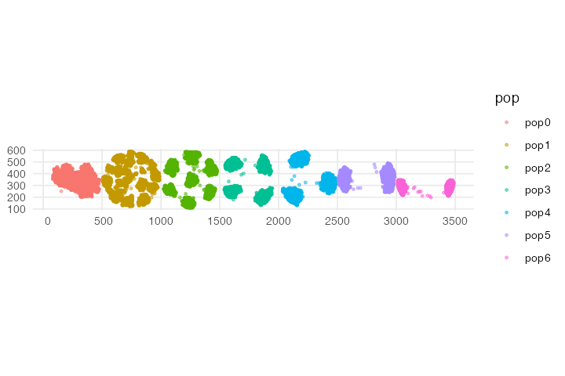

Programming dispersion dynamics
Source:vignettes/vignette-03-interactions.Rmd
vignette-03-interactions.RmdIn addition to building models that capture movement or expansion using a set of simple R functions, slendr makes it possible to program more subtle parameters of spatial population dynamics.
Among such parameters are those governing so-called spatial interactions, described in detail in chapter 15 of SLiM’s extensive manual. Describing this functionality is beyond the scope of slendr’s tutorial vignettes such as this one, but broadly speaking, slendr implements three different kinds of parameters influencing spatial interactions and dispersal:
-
Spatial competition distance - governed by slendr
parameter
competition,which signifies the maximum distance at which two individuals can influence each other’s fitness via competition. -
Mate choice distance - governed by the parameter
mating, which determines how the maximum distance over which an individual will find a potential mate. -
Dispersal distance - determined by the parameter
dispersal, which establishes how far from a parent offspring can migrate before the next generation (when the offspring potentially becomes a parent itself). More accurately, this parameter determines the standard deviation of a normal distribution of such dispersal distances.
All three parameters can be specified for each simulated population
individually in the population() call. Alternatively,
default values for these parameters can be given in a
compile_model() call and are then used for all populations
in the model. Importantly, each population must be given values for all
three of these parameters, whether as specific values for that
particular population or as default values passed to
compile_model().
Finally, as with other functions for programming model spatial dynamics, the slendr package provides a simple way to change the spatial interaction dynamics throughout the course of the simulation. Even complex models can be programmed using only a couple of lines of extremely simple R code, resulting in a robust SLiM simulation script being generated under the hood.
#> =======================================================================
#> NOTE: Due to Python setup issues on some systems which have been
#> causing trouble particularly for novice users, calling library(slendr)
#> no longer activates slendr's Python environment automatically.
#>
#> In order to use slendr's msprime back end or its tree-sequence
#> functionality, users must now activate slendr's Python environment
#> manually by executing init_env() after calling library(slendr).
#>
#> (This note will be removed in the next major version of slendr.)
#> =======================================================================
init_env()#> The interface to all required Python modules has been activated.
set.seed(314159)To demonstrate this feature, let’s look at a simple example. Let’s make a rectangular world map first:
We have constructed seven populations, each occupying a discrete circular range on a blank landscape 3500 distances units wide and 700 distance units tall. All are programmed to appear in the simulation in generation one and have the same number of individuals.
N <- 3000; y <- 350; r = 240
p0 <- population("pop0", time = 1, N = N, map = map, center = c(250, y), radius = r)
p1 <- population("pop1", time = 1, N = N, map = map, center = c(750, y), radius = r)
p2 <- population("pop2", time = 1, N = N, map = map, center = c(1250, y), radius = r)
p3 <- population("pop3", time = 1, N = N, map = map, center = c(1750, y), radius = r)
p4 <- population("pop4", time = 1, N = N, map = map, center = c(2250, y), radius = r)
p5 <- population("pop5", time = 1, N = N, map = map, center = c(2750, y), radius = r)
p6 <- population("pop6", time = 1, N = N, map = map, center = c(3250, y), radius = r)
plot_map(p0, p1, p2, p3, p4, p5, p6)Next, we will program a series of changes in the parameter governing the maximum competition distance of these populations; this parameter influences how “clumpy” the population spread is. If there is lots of competition, individuals will tend to minimize this competition by separating from each other as much as possible. We will change one population at a time, so that we can see each population respond in turn to the change in its spatial dynamics. This is not a realistic model for any evolutionary scenario, of course, but when animated, it will allow us to see the influence of the parameter choice on the spatial dynamics that emerge from the simulation.
p1 <- set_dispersal(p1, time = 100, competition = 80)
p2 <- set_dispersal(p2, time = 200, competition = 130)
p3 <- set_dispersal(p3, time = 300, competition = 170)
p4 <- set_dispersal(p4, time = 400, competition = 220)
p5 <- set_dispersal(p5, time = 500, competition = 300)
p6 <- set_dispersal(p6, time = 600, competition = 380)Having defined the spatial dynamics, we will compile this model and
execute the simulation. Note that because this model starts at the
present and runs into the future (unlike previous models that started in
the past and ran up to the present), we need to specify the total length
of the simulation with simulation_length = 1000 to know
when to terminate it.
model <- compile_model(
populations = list(p0, p1, p2, p3, p4, p5, p6),
generation_time = 1, resolution = 1, simulation_length = 1000,
competition = 10, mating = 10, dispersal = 5,
path = paste0(tempfile(), "_spatial-interactions")
)In order to let the populations reach an equilibrium spatial spread at the beginning of the simulation, we will let the simulation run through a burnin period of 100 generations. We will also save the spatial locations of all individuals in order to visualize the spatial population dynamics with an animation later.
locations_file <- tempfile(fileext = ".gz")
ts <- slim(model, sequence_length = 1, recombination_rate = 0, locations = locations_file,
burnin = 100, method = "batch", verbose = FALSE, random_seed = 314159)
# get a summary of the simulated tree-sequence object
ts#> ╔════════════════════════╗
#> ║TreeSequence ║
#> ╠═══════════════╤════════╣
#> ║Trees │ 1║
#> ╟───────────────┼────────╢
#> ║Sequence Length│ 1║
#> ╟───────────────┼────────╢
#> ║Time Units │ ticks║
#> ╟───────────────┼────────╢
#> ║Sample Nodes │ 42000║
#> ╟───────────────┼────────╢
#> ║Total Size │10.8 MiB║
#> ╚═══════════════╧════════╝
#> ╔═══════════╤═════╤════════╤════════════╗
#> ║Table │Rows │Size │Has Metadata║
#> ╠═══════════╪═════╪════════╪════════════╣
#> ║Edges │76559│ 2.3 MiB│ No║
#> ╟───────────┼─────┼────────┼────────────╢
#> ║Individuals│53350│ 5.1 MiB│ Yes║
#> ╟───────────┼─────┼────────┼────────────╢
#> ║Migrations │ 0│ 8 Bytes│ No║
#> ╟───────────┼─────┼────────┼────────────╢
#> ║Mutations │ 0│ 1.2 KiB│ No║
#> ╟───────────┼─────┼────────┼────────────╢
#> ║Nodes │76607│ 2.8 MiB│ Yes║
#> ╟───────────┼─────┼────────┼────────────╢
#> ║Populations│ 7│ 3.2 KiB│ Yes║
#> ╟───────────┼─────┼────────┼────────────╢
#> ║Provenances│ 1│34.1 KiB│ No║
#> ╟───────────┼─────┼────────┼────────────╢
#> ║Sites │ 0│16 Bytes│ No║
#> ╚═══════════╧═════╧════════╧════════════╝Once the simulation has finished running, we can recapitulate the spatial population dynamics simulated by the SLiM back end script as an animated GIF (we skip this animation in this vignette to make the package installation size smaller):
animate_model(model, locations_file, steps = 80, width = 500, height = 200)Alternatively, we can use tree sequence processing features of slendr to just capture the last spatial snapshot of the simulated populations, which will be even faster:
library(ggplot2)
locations <- ts_nodes(ts) %>% dplyr::filter()
ggplot() + geom_sf(data = locations, aes(color = pop), size = 0.75, alpha = 0.5) + theme_minimal()
Fun animation, isn’t it? If you compare the result to the model dynamics we programmed above, you can see that the spatial dynamics follow what we would expect based on the parameter values. As time progresses, the spatial competition for each successive population gets fiercer and fiercer (the distance at which individuals can “feel” the competition is getting larger and larger), forcing the individuals to form more and more distant clusters. Compare this to the starting state of the simulation, in which all populations form a single randomly shifting “blob” of individuals which is allowed by the model because individuals barely compete with each other.
Depending on a species or population under study, these abstract parameters (and the spatial clustering or “clumpiness” they represent) could mean all sorts of things and could be used to model various phenomena in nature (competition for resources, shifting metapopulation dynamics, formation of “tribes”, etc.).
It needs to be said that unlike the spatial population dynamics functionality described in the main tutorial, which is a unique feature of slendr, the example in this vignette could be reproduced in pure SLiM using vanilla Eidos code. However, I think it is fair to say that the slendr R code is much more flexible and easier to tweak and extend towards much more complex scenarios. Again, as mentioned several times throughout the documentation, this is another good example of how the simple slendr R interface lets you focus on the difficult part of modeling (specifying spatiotemporal model dynamics), get immediate visual feedback during model building, and leverage the powerful SLiM simulation framework as a low-level computational engine.